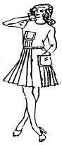
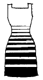
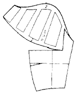
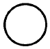
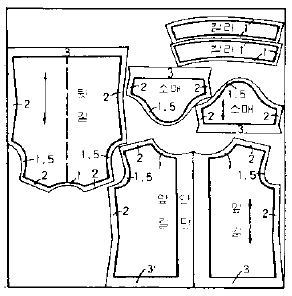

패션디자인산업기사 (2002-09-08 기출문제)
1과목: 피복재료학
1. 아세테이트 섬유의 설명 중 옳은 것은?
- 비중은 면이나 레이온 보다 무겁다.
- 염색에는 물에 팽윤이나 습윤성이 적어 분산 염료만 이용된다.
- 열가소성 섬유로 다림질 온도는 100℃이하에서 해야한다.
- 일광에 노출시 폴리에스테르 섬유보다 강도 저하가 덜 된다.
(정답률: 알수없음)

2. 다음 중 나일론 스타킹을 만들 때 응용되는 성질은?
- 열가소성
- 내연성
- 내열성
- 대전성
(정답률: 알수없음)
3. 필라멘트사에 꼬임을 주어 권축을 가지게 한 후 열처리하여 만든 실은?
- 텍스쳐사
- 합연사
- 장식사
- 교합사
(정답률: 알수없음)
4. 양모 직물의 영구적인 형체 고정에 이용되는 약제는?
- 알칼리제
- 환원제
- 계면활성제
- 표백제
(정답률: 알수없음)
5. 하이벌크 가공이 주로 이용되는 섬유는?
- 폴리에스테르(polyester)
- 폴리프로필렌(polypropylene)
- 아세테이트(acetate)
- 아크릴(acryl)
(정답률: 알수없음)
6. 다음 중 3원 조직에 속하는 직물 조직명은?
- 파일직
- 주자직
- 붕조직
- 이중직
(정답률: 알수없음)
7. 평직의 특징이 아닌 것은?
- 조직이 튼튼하다.
- 조직은 겉과 뒤가 같다.
- 마찰에 강하다.
- 매끄럽고 부드럽다.
(정답률: 알수없음)
8. 다음 중 마닐라삼의 용도로서 적당한 것은?
- 구명대
- 여름 모자용 원료
- 겨울 옷감
- 의복의 속재료
(정답률: 알수없음)
9. 공통식 번수 30's의 모사를 영국식 면사 번수(Ne)로 환산하면?
- 10번수
- 17.7번수
- 19.7번수
- 20.5번수
(정답률: 알수없음)
10. 카제인 섬유의 원료는?
- 우유
- 콩
- 땅콩
- 면
(정답률: 알수없음)
11. 다음 중 주성분이 케라틴이 아닌 것은?
- 사람의 머리털
- 견
- 양모
- 헤어섬유
(정답률: 알수없음)
12. 편성물에 대한 설명이 맞는 것은?
- 경사와 위사를 엮어서 만든다.
- 실로 고리를 만들고 이 고리에 새 고리를 걸어 만든다.
- 섬유를 바늘로 펀치하여 만든다.
- 실과 실을 서로 매듭 등으로 묶어서 만든다.
(정답률: 알수없음)
13. 다음 중 능직이 1완전조직을 형성하기 위한 최소한의 경사올수는?
- 2올
- 3올
- 5올
- 8올
(정답률: 알수없음)
14. 폴리에스테르 섬유에 알칼리를 처리하면 어떤 특성이 나타나는가?
- 섬유표면이 매끄러워 진다.
- 강도가 증가한다.
- 섬유단면이 다각형으로 변한다.
- 천연견과 같은 촉감을 갖게 한다.
(정답률: 알수없음)
15. 방적사에 대한 설명은?
- 한 올의 필라멘트 섬유로 만든 실
- 주로 합성섬유로 만든 실
- 꼬임수가 다른 단사로 만든 실
- 스테이플 섬유로 만든 실
(정답률: 알수없음)
16. 면섬유의 일광에 대한 작용은?
- 자외선에 의해 산화 셀룰로스가 생성된다.
- 직사광선 하에서는 강력저하가 없다.
- 자외선에 의해 알칼리 셀룰로스가 만들어진다.
- 자외선에 의해 탄화되어 양모 회수에 이용된다.
(정답률: 알수없음)
17. 방향 마찰차(directional friction effect)를 유발시키는 것은?
- 메듈라(medulla)
- 코르텍스(Cortex)
- 스케일(Scale)
- 크림프(Crimp)
(정답률: 알수없음)
18. 스테이플 파이버(staple fiber)가 인조견보다 따뜻한 이유는?
- 강도, 신도가 크기 때문에
- 함기량이 적기 때문에
- 모섬유화 시켰기 때문에
- 비중이 크기 때문에
(정답률: 알수없음)
19. 무광택 인조섬유를 만드는 방법은?
- 습식방사를 한다.
- 연신(drawing)을 반복한다.
- 방사구를 좁게한다.
- 방사원액에 이산화티탄(TiO2)을 넣는다.
(정답률: 알수없음)
20. 다음 중 천연 꼬임을 가지는 섬유는?
- 양모(wool)
- 대마(hemp)
- 무명(cotton)
- 폴리에스테르(polyester)
(정답률: 알수없음)
2과목: 패션디자인론
21. 문양의 디자인 효과에 관한 설명이다. 틀린 것은?
- 어린이의 경우는 작은 문양이 어울린다.
- 중간정도의 체크문양은 체형의 결점을 보완해 준다.
- 마른 체형은 문양의 색이 부드러워야 체형이 보완된다.
- 활동적인 분위기의 사람은 귀여운 문양이 잘 어울린다.
(정답률: 알수없음)
22. 활동적이고 스포티한 느낌을 주려면 색채의 중량감을 어떻게 이용하면 가장 효과적인가?
- 무거운 색체를 하의에 가벼운 색채를 상의에 사용한다.
- 무거운 색채를 상의에 가벼운 색채를 하의에 사용한다.
- 상의와 하의에 모두 무거운 색채를 사용한다.
- 상의와 하의에 모두 가벼운 색채를 사용한다.
(정답률: 알수없음)
23. 조화의 개념을 옳게 설명한 것은?
- 한가지가 완전한 미를 이루는 것
- 서로 대립하는 것들만으로 어우러지게 하는 것
- 하나를 위하여는 다른 것을 위축 시키는 것
- 두 개 이상의 서로 다른 성격이 공존하여 이질감 없이 어우러지게 하는 것
(정답률: 알수없음)
24. 주말에 거리에서 입을 수 있는 평상복으로 입는 사람의 개성을 살린 편한 느낌의 의복 스타일을 무엇이라고 하는가?
- 씨티캐쥬얼 웨어
- 스포티액티브 웨어
- 포말 웨어
- 리조트 웨어
(정답률: 알수없음)
25. 난색인 적색과 한색인 청색을 혼합한 중성색으로 고대부터 동서양까지 고귀한 색으로 여긴 색은?
- 황색(yellow)
- 녹색(green)
- 자색(violet)
- 청색(blue)
(정답률: 알수없음)
26. 다음 그림의 의복은 어떤 균형의 미를 이루고 있는가?

- 방사 대칭의 미를 이룬다.
- 비대칭 균형의 미를 이룬다.
- 균형의 미를 이룬다.
- 대칭 균형의 미를 이룬다.
(정답률: 알수없음)
27. 키가 큰 체형에 어울리는 디자인으로 볼 수 없는 것은?
- 러플 달린 귀여운 장식
- 제 위치의 허리선
- 큼직한 액세서리
- 품위있는 디자인
(정답률: 알수없음)
28. 다음 중에서 복식 디자인의 원리 중 비례의 개념을 설명하는 것은?
- 조형물의 부분과 부분, 부분과 전체와의 길이나, 크기의 관계가 조화를 이루도록 구성하는 것
- 중심선 양쪽에 동량의 힘이 있는 상태, 즉 양쪽에 같은 량의 눈을 끄는 힘이 있는 상태
- 디자인 요소를 규칙적으로 반복시키거나, 점진적으로 변화시킴으로서 시각적 율동감을 얻는 것
- 보는 사람의 처음의 눈길을 집중시킬 수 있는 강력한 중심점을 만드는 것
(정답률: 알수없음)
29. 색상 배색의 방법을 설명한 것 중 부적합한 것은?
- 지나친 여러색의 사용은 혼란해 보인다.
- 무채색에 유채색으로 악센트를 줄 때는 고채도가 효과적이다.
- 대조되는 색끼리의 조화는 세퍼레이션 칼라를 사용한다.
- 보조색은 주색과 동등한 면적으로 취급하는 것이 좋다.
(정답률: 알수없음)
30. 같은 밝기의 회색을 백색 위에 올려놓은 것은 흑색 위에 올려놓은 것보다 더욱 어둡게 보이는 대비는?
- 명도대비
- 색상대비
- 채도대비
- 보색대비
(정답률: 알수없음)
31. 기능과 미를 동시에 추구하는 목적으로 하는 근대 디자인의 3대 운동의 예가 아닌 것은?
- 아르누보
- 바로크
- 바우하우스
- 미술공예운동
(정답률: 알수없음)
32. 다음은 스타일화 기법에 대한 설명이다. 틀린 것은?
- 아동의 목은 가늘고 몸은 전체적으로 둥글게 표현한다.
- 일러스트를 그리는데 있어 가장 중요한 것은 빛의 방향이라 할 수 있다.
- 생략기법은 디자인의 실루엣이나 디테일을 표현하는데 최소한으로 그리는 방법이다.
- 남성의 프로모션은 여성과 별차이는 없으나 목을 굵게, 배꼽의 위치는 약간 낮게 하여야 한다.
(정답률: 알수없음)
33. 피복재료를 자르거나 꿰매지 않고 그대로 몸에 둘러입는 형태는?
- 권의
- 봉재의
- 전합의
- 통형의
(정답률: 알수없음)
34. 의복의 각 부분의 크기와 전체와의 일관된 관계를 말하는 것은?
- 리듬(rhythm)
- 비례(proportion)
- 규모(scale)
- 강조(emphasis)
(정답률: 알수없음)
35. 다음 디자인에 사용된 리듬의 원리는 어떤 리듬에 대한 것인가?

- 방사상 리듬
- 점진적 리듬
- 반복적 리듬
- 변이적 리듬
(정답률: 알수없음)
36. 소재의 구성효과로 가장 적합치 않은 것은?
- 작은 면적이면서 강렬한 분위기를 주는 것은 가능한 작은 크기가 좋다.
- 동일한 재질일지라도 색이 다르면 변화의 미를 유발할 수 있다.
- 유사한 재질감을 같은 색상으로 조화시키는 것은 변화를 주면서도 닮은 조화를 이룬다.
- 직물과 가죽, 실크와 모피는 각자의 다른 표면특성이 강하게 느껴지기 때문에 좋지 않다.
(정답률: 알수없음)
37. 실루엣 선(silhouette lines)에 크게 영향을 미치는 것이 아닌 것은?
- 길의 형태
- 소매의 형태
- 트리밍의 형태
- 슬랙스의 형태
(정답률: 알수없음)
38. 디자인의 의미로 가장 적당한 것은?
- 조형물의 제작을 위한 설계 또는 계획 과정
- 예술작품의 설계 과정
- 예술 작품의 창조 과정
- 조형물의 제조와 생산 과정
(정답률: 알수없음)
39. 두가지 이상의 색상을 함께 사용할 때 각 색이 시각적으로 느끼게 하는 힘의 균형을 이루는데 중요한 역할을 하는 것은 색의 어떤 역할과 가장 관련이 있는가?
- 색의 온도감
- 색의 안정감
- 색의 면적감
- 색의 운동감
(정답률: 알수없음)
40. 디자인의 조건에 대한 설명 중 틀린 것은?
- 적절한 재료를 선택해야 한다.
- 가공비를 최소화해야 한다.
- 자연물의 아름다움을 있는 그대로 추구해야 한다.
- 시대에 맞는 아름다움을 추구해야 한다.
(정답률: 알수없음)
3과목: 의류상품학 및 복식문화사
41. 패션 머천다이징(Fashion merchandising)에 대한 설명 중 옳지 않는 것은?
- 소비자의 수용 패턴을 고려하여야 한다.
- 대량생산업체 → 도매업체 → 소매업체 → 소비자에 이르는 네단계 마케팅 프로세스를 설정한다.
- 계절적 변화를 고려하여야 한다.
- 패션 소매상인은 소비자를 위한 구매 대리인으로서의 역할을 수행한다.
(정답률: 알수없음)
42. 기업의 입장에서 본 광고의 기능과 가장 관계가 없는 것은?
- 신상품 도입 기능
- 시장 확대 기능
- 상품 제조 기능
- 판매원 활동 조성 기능
(정답률: 알수없음)
43. 르네상스 시대의 대표적인 칼라가 아닌 것은?
- 러플 칼라
- 메디치 칼라
- 위스크 칼라
- 엘리자베스 칼라
(정답률: 알수없음)
44. 로마네스크 스타일의 기본 형식은?
- 볼리오(bliaud), 쉐엥즈(chainse)
- 브리치즈(breeches), 언더튜닉(under tunic)
- 뿌르뿌엥(pourpoint), 꼬따르디(cotehardie)
- 우쁠랑드(houpelands), 튜닉(tunic)
(정답률: 알수없음)
45. 엠파이어 스타일에 관한 설명 중 옳지 않는 것은?
- 중세 귀족풍의 복고의상 양식이다.
- 고대,그리스,로마의 복식을 연상케 하는 실루엣을 나타낸다.
- 여성들이 콜셋에서 해방된 스타일이다.
- 얇고 비치는 머슬린 소재가 유행하였다.
(정답률: 알수없음)
46. 중세 초기의 복식에 영향을 미치지 않는 것은?
- 게르만 복식
- 기독교의 영향
- 로마 복식
- 시민 의식의 발달
(정답률: 알수없음)
47. 1920년대 유행한 실루엣은 무엇인가?
- 보이쉬 (boyish)
- 슬림 (slim)ish)
- 밀리터리룩 (military look)
- 볼드룩 (bold look)
(정답률: 알수없음)
48. 패션 전파이론 중에서 일반 대중이 상류계층을 모방하는 태도에서 비롯되는 것은?
- 집합 전파이론
- 수평 전파이론
- 상향 전파이론
- 하향 선택이론
(정답률: 알수없음)
49. 적절한 상품이나 서비스를 적절한 시기에 적당한 가격으로 시장에 공급하도록 하는 기업내의 활동을 무엇이라 하는가?
- 시장분석
- 상품구매
- 판매촉진
- 마케팅
(정답률: 알수없음)
50. 그리스 복식의 특징이 아닌 것은?
- 재단이나 바느질을 하지 않고 옷감을 몸에 느슨하게 걸치는 형태이다.
- 신체의 곡선에 따라 자연스럽게 형성되는 주름이 리듬과 율동감을 창조한다.
- 옷감을 몸에 걸치고 어깨에서 고정시킬 때 페플로스를 사용하였다.
- 옷감을 걸치는 방법에 따라 옷 모양에 변화를 줄 수 있다.
(정답률: 알수없음)
51. 마케팅의 발전 과정에 있어서 마케팅 수단으로서 광고가 등장한 시대는?
- 제 1단계 : 세일즈 지향시대
- 제 2단계 : 대량 유통시대
- 제 3단계 : 대량 생산시대
- 제 4단계 : 마케팅 콘셉트시대
(정답률: 알수없음)
52. 상품의 판매를 증대시키기 위한 각종 기능이나 활동을 무엇이라 하는가?
- 시장 표적화
- 패션 머천다이징
- 패션 마케팅
- 패션 프로모션
(정답률: 알수없음)
53. 패션의 전파 단계로 맞는 것은?
- 모드 → 스타일 → 패션
- 스타일 → 패션 → 모드
- 패션 → 스타일 → 모드
- 모드 → 패션 → 스타일
(정답률: 알수없음)
54. 1947년 뉴룩을 발표한 후 1950년대 라인시대를 주도했던 디자이너는?
- 크리스티앙 디올
- 발렌시아가
- 가브리엘 샤넬
- 폴푸아레
(정답률: 알수없음)
55. 르네상스 시대에 유행한 것으로 둥근 호박이나 양파모양으로 부풀린 바지의 명칭은?
- 랭그라보(rhinegraves)
- 트렁크 호즈(trunk hose)
- 판탈롱(pantaloon)
- 뀔로뜨(culotte)
(정답률: 알수없음)
56. 비차별화 전략의 장점을 옳게 설명한 것은?
- 작은 시장에서 높은 점유율을 차지할 수 있다.
- 자사의 독특한 이미지를 강조할 수 있다.
- 같은 종류의 상품을 대량생산하여 원가를 절감시킬 수 있다.
- 패션 상품과 같이 다양한 고객의 욕구를 만족시킬 수 있다.
(정답률: 알수없음)
57. 다음 중 서양복의 시초라 할 수 있는 가장 오래된 복식은 어느 것인가?
- 코타르디(cotehardie)
- 로인클로스(Loincloth)
- 쉬르코(Surcot)
- 히메이션(himation)
(정답률: 알수없음)
58. 패션산업의 특성을 설명한 것 중 옳지 않는 것은?
- 패션산업은 소비자 지향 산업이다.
- 패션산업은 지식집약 산업이다.
- 패션산업은 대기업에 의한 독점률이 높은 산업이다.
- 패션산업은 위험부담률이 높은 산업이다.
(정답률: 알수없음)
59. 패션의 전파과정에서 독창적인 창작으로 새로운 감각과 형태로 시도되는 단계는 무엇인가?
- style
- mode
- fashion
- classic
(정답률: 알수없음)
60. 세분화된 시장의 어느 부분에 특정 브랜드의 위치를 정할 것인가에 관한 의사결정을 무엇이라 하는가?
- 시장 세분화
- 차별화 전략
- 마켓팅 믹스 계획수립
- 브랜드 포지셔닝
(정답률: 알수없음)
4과목: 패턴공학 및 의복구성학
61. 인체계측방법 중 Martin식의 단점의 설명이 아닌 것은?
- 기록자의 오기, 누락이 생길 수 있다.
- 피검사자의 자세변화로 오차가 생길 수 있다.
- 계측경비가 많이 든다.
- 계측자에 의한 계측오차가 생길 수 있다.
(정답률: 알수없음)
62. 마름질을 하고자 옷감에 패턴을 배치할 때의 방법으로 옳은 것은?
- 패턴의 결방향을 옷감의 횡선에 맞춘다.
- 옷감의 겉쪽이 겉으로 나오게 접고 패턴을 그린다.
- 첵크 무늬나 줄 무늬는 옆선의 무늬를 맞추어 배치한다.
- 벨벳 같은 직물은 털의 결방향을 아래로 배치한다.
(정답률: 알수없음)
63. 다음 중 천의 표면에 봉환이 나타나지 않으므로 스커트, 바지 등의 감침봉에 이용되는 재봉기는?
- 안전봉 재봉기
- 편평봉 재봉기
- 이중환봉 재봉기
- 블라인드봉 재봉기
(정답률: 알수없음)
64. 스커어트 착용시 엉덩이 뒤에 주름이 생기고, 앞스커트단은 올라가고 뒤스커트단이 처졌다면 다음 중 어떤 체형에 속하는가?
- 하반신 허리 옆이 나온 체형
- 하반신 굴신체
- 하반신 엉덩이가 넓은 체형
- 하반신 반신체
(정답률: 알수없음)
65. 생산개선방법 중 선진국의 봉제공장에서 보편화 되어 있는 5W 1H 에 해당되지 않은 것은?
- 일(work)
- 사람(who)
- 방법(how)
- 목적(what)
(정답률: 알수없음)
66. 다음 그림은 어느 소매의 원형인가?

- 랜턴 슬리브
- 호리존틀 플리스 슬리브
- 크레센트 슬리브
- 레그 오브머튼 슬리브
(정답률: 알수없음)
67. 다음 중 스커트의 뒷허리 밑에 군주름이 생길 때 보정 방법은?
- 옆선을 내주고 다아트 위치를 고쳐준다.
- 허리선을 내리고 다아트 길이를 정리한다.
- 허리선을 올린다.
- 허리넓이를 줄인다.
(정답률: 알수없음)
68. 다음의 의류가공공정의 기호가 뜻하는 것은?

- 본봉미싱
- 특수미싱
- 아이론
- 프레스
(정답률: 알수없음)
69. 그레이딩이란 어떤 작업인가?
- 연단된 천 위에 형지 모양대로 완성선을 그리는 작업
- 종이에 본을 그리는 작업
- 잰 치수에 맞게 본을 제도하여 자르는 작업
- 사이즈별로 형지에 치수를 조절하는 작업
(정답률: 알수없음)
70. 다음은 소매에서 오그림 분량과 오그리는 방법에 대해서 설명한 것이다. 오그림 위치와 오그림 분량이 가장 옳게 짝지워진 것은?
- 소매 밑선 끝점으로부터 6-7cm, 윗부분 오그리는 분량은 3-4cm정도이다.
- 소매 밑선 끝점으로부터 4-5cm, 윗부분 오그리는 분량은 거의 없다.
- 소매 밑선 끝점으로부터 6-7cm, 윗부분 오그리는 분량은 거의 없다.
- 소매 밑선 끝점으로부터 1-2cm, 윗부분 오그리는 분량은 8-10cm정도이다.
(정답률: 알수없음)
71. 블라우스를 보정하는 방법 중 올바른 것은?
- 어깨넓이가 넓을 때 어깨넓이를 좁혀주며 진동둘레 밑을 내려준다.
- 가슴이 큰 체형은 원형을 B.P.점을 중심으로 절개하여 다트분과 앞처짐분을 줄여준다.
- 처진 어깨의 경우 앞,뒤길의 어깨끝점을 내려주고 진동둘레 밑을 같은 치수로 내려준다.
- 솟은 어깨는 앞,뒤길 어깨끝점을 올려주고 진동둘레 밑을 내려준다.
(정답률: 알수없음)
72. 다음은 블라우스를 재단한 것이다. 몇 ㎝ 폭의 옷감을 사용하였는가?

- 110㎝
- 90㎝
- 50㎝
- 150㎝
(정답률: 알수없음)
73. 의복구성 과정의 순서의 흐름이 올바른 것은?
- 디자인 - 제도 - 봉제 - 재단
- 디자인 - 재단 - 제도 - 봉제
- 디자인 - 재단 - 봉제 - 제도
- 디자인 - 제도 - 재단 - 봉제
(정답률: 알수없음)
74. 심 퍼커링(seam puckering)은 솔기를 박았을 때 옷감이 본래 길이보다 늘어났거나 오그라드는 것을 말한다. 이러한 현상은 재봉틀의 조건, 실의 굵기, 바늘땀의크기, 옷감의 조건 등 여러 요소의 영향으로 일어나는데 특히 어떠한 직물에 많이 나타나는가?
- 수지 가공 직물W.W
- W.W(wash and wear)가공직물
- 방축 가공 직물
- 방오 가공 직물
(정답률: 알수없음)
75. 퍼커링 해결책으로 가장 부적당한 것은?
- 바닥에 종이를 대고 바느질한다.
- 실의 굵기는 가는 것이 좋다.
- 옷감을 약간 잡아당기면서 한다.
- 실의 굵기는 아주 굵은 것으로 한다.
(정답률: 알수없음)
76. 본봉재봉기의 4 주요운동과 거리가 먼 것은?
- 북집의 운동
- 실채기의 운동
- 송치의 운동
- 침봉의 운동
(정답률: 알수없음)
77. 어깨의 숄더 다트와 웨이스트 다아트 선을 연결한 선의 명칭은?
- Yoke line
- Princess line
- Chanel line
- A - line
(정답률: 알수없음)
78. 인체계측법의 종류에 대한 설명 중 틀린 것은?
- 1차원적 계측법 - 마틴 계측법
- 2차원적 계측법 - 슬라이딩 게이지법
- 2차원적 계측법 - 모아레 사진법
- 3차원적 계측법 - 석고법
(정답률: 알수없음)
79. 재봉기에서 봉제 시 소재를 누름용수철의 압력을 이용하여 적합하게 눌러 윗실의 고리 형성을 도와주는 역할을 하는 것은?
- 톱니
- 바늘대
- 바늘판
- 노루발
(정답률: 알수없음)
80. 두장의 소재를 포개지 않은 상태에서 봉사나 다른 소재로 연결하는 시임(seam)은?
- SS(Superimposed Seam)
- FS(Flat Seam)
- BS(Bound Seam)
- LS(Lapped Seam)
(정답률: 알수없음)